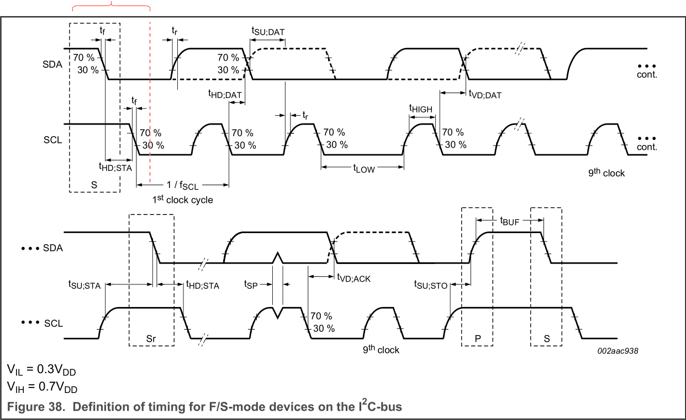
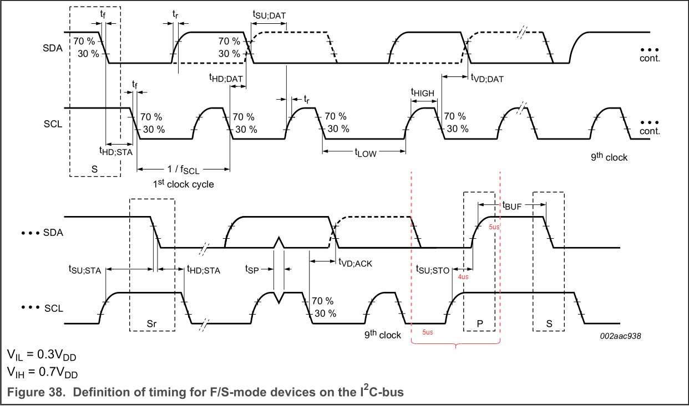

I2C总线
时钟延展
总线挂死
I2C子系统 Linux内核实现
TODO
软件模拟I2C(GPIO模拟)
检测总线是否空闲
发送START
// 确保总线空闲
// HOW TO
us_delay(4); // 额外的
SDA=1;SCL=1;
// 是否需要延时？延时多少
// START 符号
SDA=0;SCL=1;
// T_hd;sta > 4.0 us
us_delay(4);
SDA=0;SCL=0;

发送
// T_low > 4.7, T_high > 4.0us
SCL = 0;
us_delay(5);
// 数据
SDA = xx;
// T_su;dat > 250ns
us_delay(1);
// 拉高SCL
SCL = 1;
// T_high > 4.0us
us_delay(4);
// 拉低SCL
SCL = 0;
// T_high > 4.0us
us_delay(1);
停止
SDA=0;SCL=0;
us_delay(5);
SCL=1;
// T_su;sto > 4.0us
us_delay(4);
SDA=0;
// T_hd;dat
us_delay(5);

学习文档
- UM10204(I2C-bus specification and user manual) Texas Instruments